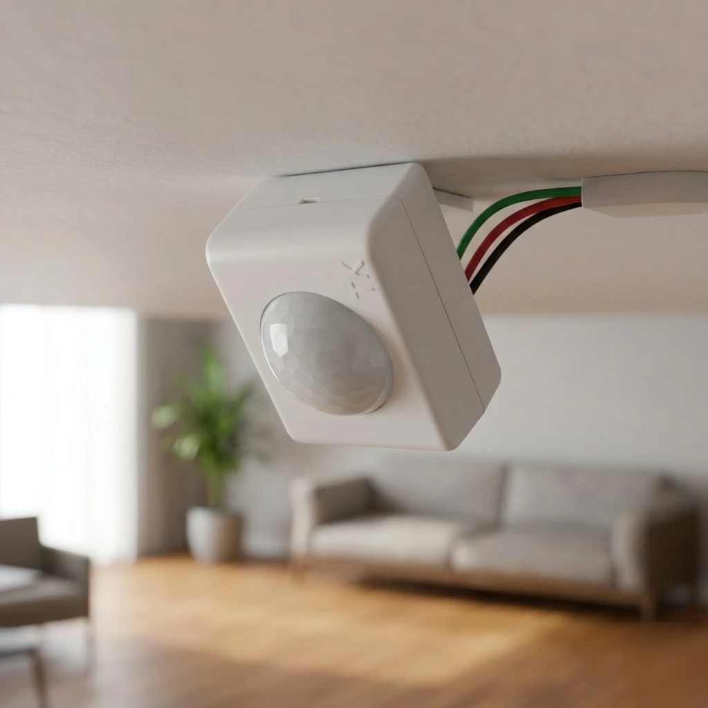

Sensor de movimento para teto de sobrepor
A melhor escolha para o teto comum, sem embutir no forro, depende de três coisas: quanto do ambiente você precisa cobrir, quantos pontos de acesso existem e quem costuma circular por ali.
A Tektron tem sensores de sobrepor para cada uma dessas situações: infravermelho, cobertura de 360° e opções mais sensíveis a movimentos discretos.
Seu teto é de gesso, drywall ou forro de madeira e você precisa embutir o sensor? Veja a página específica: sensor de movimento para teto embutido.

O problema
- A luz do ambiente fica acesa por horas, sem ninguém embaixo dela Em salas, escritórios e ambientes amplos com controle pelo teto, o interruptor único incentiva deixar tudo aceso o dia inteiro.
- O ambiente tem mais de um ponto de acesso Um sensor voltado para uma única direção pode não perceber quem entra por outro lado do ambiente.
- Quem ocupa o ambiente se movimenta devagar ou fica parado fazendo pouco movimento Idosos, pessoas com mobilidade reduzida ou quem permanece sentado fazendo pequenos gestos podem não gerar movimento suficiente para alguns sensores.
A solução Tektron
A Tektron fabrica sensores de teto de sobrepor para três situações diferentes. O critério de escolha começa pela forma de ocupação do ambiente — não pelo produto.
Infravermelho
Para o teto comum, de sobrepor, o BS-50 é a solução principal. As outras três variam em ajuste, temporização e tamanho — dimensões menores (29–50 mm) no CS-5/TC-5 contra 65 mm no BS-50/MI-500.
| Característica |
 BS-50
BS-50
|
MI-500
|
 CS-5
CS-5
|
|
|---|---|---|---|---|
| Temporização | 5 s · 1 min · 4 min | 5 s · 1 min · 4 min · 12 min | 5 s · 1 min · 4 min | 5 s · 1 min · 4 min |
| Ajuste de sensibilidade | Não | Sim | Não | Não |
| Articulador | Sim | Sim | Sim | Não |
| Controle de carga | Relé NA — 200 W/350 W | Relé NA — 200 W/350 W | Relé NA — 200 W/350 W | SCR/Triac — 30 W/60 W |
Já sabe qual modelo precisa? Onde Comprar / Solicitar Orçamento
Cobertura 360° ao redor do ponto de instalação
Para ambientes com mais de um ponto de acesso, onde o campo de visão precisa cobrir todas as direções ao redor do sensor, utilize o TKR — sensor por radar Doppler, com detecção 360° que atravessa paredes finas de madeira, gesso ou vidro, captando movimento do outro lado (por exemplo, no cômodo vizinho). Também detecta a abertura de portas metálicas — o metal reflete bem o radar —, mas não atravessa o metal como atravessa madeira ou gesso. A sensibilidade a movimentos sutis é parecida com a do sensor ultrassônico, e o TKR é imune ao ar em movimento de janelas ou saídas de ar insuflado. Ainda assim, evite instalar muito próximo do aparelho de ar-condicionado em si — peças móveis do equipamento (venezianas, ventilador interno) podem ser captadas como movimento. Para acionamento silencioso — sem o clique do relé —, utilize o TKT: controle por SCR/Triac, indicado para cargas baixas como LED.
O TKR e o TKT também podem ser embutidos no forro, além de instalados de sobrepor — veja sensor de movimento para teto embutido se essa for a sua instalação.
| Característica | TKR | TKT |
|---|---|---|
| Alcance | 5 m frontal · 4 m raio | 5 m frontal · 4 m raio |
| Articulador / ajuste de sensibilidade | Sim | Não |
| Controle de carga | Relé (até 350 W) | SCR/Triac (até 60 W) |
Em instalações com sensores Doppler próximos, mantenha distância adequada e evite sobreposição das áreas de detecção, conforme as orientações técnicas.
Ambientes com movimentação lenta ou discreta
Para ambientes fechados de até 15 m² onde os ocupantes se movimentam devagar ou permanecem fazendo pequenos gestos — corredores, escadas, halls, banheiros e escritórios frequentados por idosos, pessoas com mobilidade reduzida ou baixa estatura —, o MU-500 (tecnologia ultrassônica) é a solução principal: percebe movimentos mais sutis que o infravermelho, o que ajuda a manter a iluminação acionada enquanto o ambiente continua ocupado. Para o mesmo cenário com fotocélula integrada, utilize o MU-600.
| Característica |
 MU-500
MU-500
|
 MU-600
MU-600
|
|---|---|---|
| Cobertura | Ambientes até 15 m² | Ambientes até 15 m² |
| Detecção noturna ajustável | Não (funciona também de dia) | Sim (jumper interno) |
| Relé de segurança | NF — se falhar, a luz permanece acesa | NF — se falhar, a luz permanece acesa |
Indicados para ambientes fechados de até 15 m² — corredores, escadas, halls, banheiros e escritórios. Para áreas amplas como depósito, garagem ou área comum, veja sensores para corredores, escadas e grandes ambientes. Em instalações com sensores ultrassônicos próximos, mantenha distância adequada e evite sobreposição das áreas de detecção, conforme as orientações técnicas.
Para automatizar um interruptor já existente em caixa 4x2, sem instalar nada no teto, veja sensor de movimento para caixa 4x2.
Instalação e ligação elétrica
Todos os modelos desta página (CS-5, TC-5, BS-50, MI-500, TKR, TKT, MU-500, MU-600) usam o mesmo padrão de cores nos 3 fios, bivolt (127 V / 220 V):

Boas práticas de instalação:
- Desenergize o circuito antes de instalar.
- Confira a tensão (127 V ou 220 V) e a potência da carga — modelos com controle por relé (BS-50, MI-500, TKR, MU-500, MU-600) suportam até 200 W em 127 V ou 350 W em 220 V; os modelos de carga baixa por SCR/Triac (TC-5, TKT) suportam até 30 W em 127 V ou 60 W em 220 V.
- O comprimento do fio varia entre 20 cm (CS-5, TC-5, TKR, TKT) e 30 cm (BS-50, MI-500, MU-500, MU-600) — confira o modelo escolhido.
- Em instalações com sensores Doppler (TKR/TKT) ou ultrassônicos (MU-500/MU-600) próximos, mantenha distância adequada e evite sobreposição das áreas de detecção, conforme as orientações técnicas.
- Respeite o diagrama de ligação oficial do modelo escolhido.
Resultado esperado
O ambiente passa a ter a iluminação do teto acionada automaticamente por movimento, com a cobertura e a sensibilidade compatíveis com o formato do espaço e com quem o ocupa — e, principalmente, apaga sozinho depois do tempo configurado, sem depender de ninguém lembrar.
Fabricação e suporte
Todos os modelos desta página são fabricados no Brasil pela Tektron, com documentação técnica e diagrama de ligação disponíveis para cada modelo, e suporte técnico especializado para dúvidas de instalação.
Perguntas frequentes
- Qual sensor de teto de sobrepor escolher?
- Depende da ocupação do ambiente: infravermelho para o uso comum (BS-50 ou MI-500), cobertura 360° para ambientes com mais de um ponto de acesso (TKR ou TKT), ou ambientes com movimentação lenta e discreta, como idosos ou mobilidade reduzida (MU-500 ou MU-600). O bloco "Escolha rápida" no início da página traz o link direto para cada situação.
- Preciso embutir o sensor no forro de gesso ou madeira?
- Sim, temos um modelo específico para isso — veja sensor de movimento para teto embutido.
- Qual a diferença entre o BS-50 e o MI-500?
- O MI-500 acrescenta ajuste de sensibilidade, acionamento zero-cross e um quarto tempo de desligamento (12 min). O BS-50 tem os três tempos mais curtos (5 s · 1 min · 4 min), sem esses ajustes.
- O sensor ultrassônico (MU-500/MU-600) é melhor que o infravermelho?
- Não é "melhor" em todo cenário — é uma característica diferente. O infravermelho tem campo de detecção mais definido e depende mais da posição de instalação e da direção do movimento. O ultrassônico percebe movimentos mais sutis, o que favorece ambientes com usuários de movimentação lenta ou discreta, como idosos ou pessoas com mobilidade reduzida, porém não pode ser utilizado em locais com ventilação.
- Qual a diferença entre o TKR e o TKT?
- Os dois têm detecção 360° por radar Doppler. O TKR tem articulador e ajuste de sensibilidade, com controle por relé; o TKT não tem esses ajustes, mas tem acionamento silencioso (controle por SCR/Triac, sem o clique do relé), indicado para cargas baixas (até 60 W) como LED.
- Funciona com lâmpada LED?
- Sim. Para cargas baixas, prefira os modelos com controle por SCR/Triac (TC-5, TKT), com limite de 30 W em 127 V ou 60 W em 220 V. Os demais modelos, com controle por relé, suportam até 200 W em 127 V ou 350 W em 220 V.
- O sensor detecta uma pessoa parada?
- Este produto detecta movimento. Se a pessoa permanecer completamente imóvel, pode não ocorrer uma nova detecção. Por isso, o termo técnico adotado pela Tektron é sensor de movimento, embora no mercado brasileiro ele também seja conhecido como sensor de presença.
Próximo passo
Seja qual for o modelo — BS-50, MI-500, CS-5, TC-5, TKR, TKT, MU-500 ou MU-600 —, o próximo passo é o mesmo: